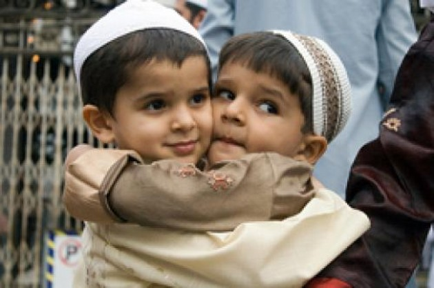
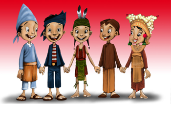

a. Menciptakan jalinan persaudaraan

Sesama muslim itu bersaudara
Sumber:www.hidayatullah.com
Dengan mempersaudarakan kaum Muhajirin dan Anshar, nabi Muhammad SAW mengajarkan kepada kita bahwa
sesama muslim itu seperti saudara. Seperti dalam hadis nabi Muhammad SAW bersabda “Seorang
muslim itu adalah saudara muslim lainnya, dia tidak boleh menzaliminya dan menghinakannya. Barang
siapa yang membantu keperluan saudaranya, maka Allah akan memenuhi keperluannya. Barang siapa yang
melapangkan satu kesusahan seorang muslim, maka Allah akan melapangkan satu kesusahan di antara
kesusahan-kesusahan hari Kiamat nanti. Dan barang siapa yang menutup aib seorang muslim, maka Allah
akan menutupi aibnya pada hari Kiamat.” (HR. Muslim, 4677).
b.Toleransi antar umat beragama

Toleransi beragama
Sumber:www.tommysatriyadi.wordpress.com
Dengan mempersaudarakan antar umat Islam (Anshar dan Muhajirin), begitu pula dengan umat non-Muslim
dengan piagam Madinah, maka suasana Kota Madinah menjadi kota yang aman, damai, dan penduduknya
saling bekerjasama.
c.Semangat berjuang yang tak kenal lelah
Rajin belajar dan bekerja keras
Sumber:www.ibikita.com
Hijarah dari Kota Makkah ke Madinah yang dilakukan oleh Rasulullah Muhammad saw adalah perjalanan
yang sulit, bahkan mengancam nyawa. Itu menunjukkan, Rasulullah saw adalah sosok yang hidupnya
dipenuhi dengan semangat juang yang tak kenal lelah.